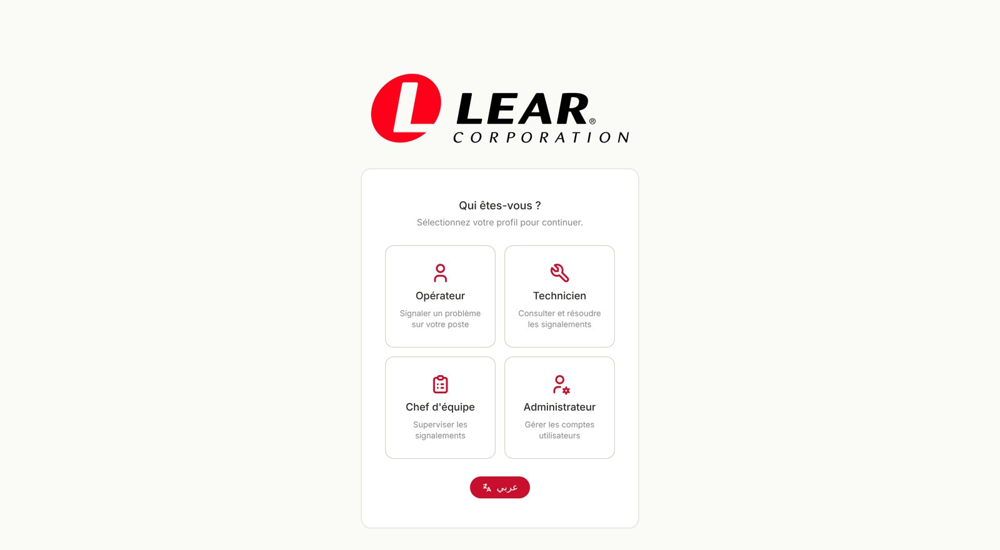

Fondé en 1917 aux États-Unis, Lear Corporation travaille pour presque tous les constructeurs automobiles sur deux activités : les sièges (Seating) et les systèmes électriques (E-Systems : faisceaux, connecteurs, électronique). Le groupe a réalisé 23,3 milliards de dollars de chiffre d'affaires en 2025 et compte environ 18 000 salariés au Maroc, répartis sur 16 sites.
Mon stage s'est déroulé à l'usine de Meknès (zone Agropolis), ouverte en 2022, qui fabrique des faisceaux de câbles, dont beaucoup pour des véhicules électriques. J'étais rattaché au service Maintenance, dans la zone de coupe : la première étape de fabrication d'un faisceau, avec 109 postes où les machines coupent, dénudent et sertissent les fils.
Dans la zone de coupe de Lear Corporation à Meknès, le signalement des problèmes (pannes, non-conformités, incidents) se faisait entièrement sur papier via des "Tag Box". Ce système engendrait des pertes d'information, des délais de traitement et rendait impossible tout suivi en temps réel des indicateurs de performance (OEE, TRS).
Développement d'une application web interne qui remplace le système papier. Elle relie les tablettes des postes, le PC du chef d'équipe et ceux des techniciens : signalements, suivi, résolution et analyse des données en temps réel.
Opérateur · Technicien · Chef d'équipe · Administrateur — chaque rôle a ses droits et ses vues.
L'opérateur signale une anomalie (Sécurité, Qualité, Production, Maintenance) ; le technicien la prend en charge, la résout et documente l'action.
Check-list de maintenance par poste et par shift (PDF), remise à zéro automatique à chaque changement de shift.
Déclaration des arrêts et redémarrages, calcul du MTTR, du MTBF et de la disponibilité, Pareto et export CSV.
Cloche in-app et email optionnel : le chef d'équipe est prévenu à chaque signalement, le technicien à chaque assignation.
Interface en français et en arabe (affichage de droite à gauche), fonctionne sans accès Internet.
Une vue par rôle. Captures réalisées avec des données de test ; cliquez sur l'image pour l'agrandir.

Le code complet et la documentation (installation, architecture, base de données, guide par rôle) sont disponibles sur le dépôt GitHub.
Le rapport de stage (27 pages, en anglais) détaille l'ensemble de la mission : contexte de Lear et du site de Meknès, analyse du système Tag Box papier, choix de la solution, architecture de l'application, résultats, difficultés rencontrées et bilan personnel.
Visualiser le rapport (PDF)Merci à Monsieur Tarik El Amine, Responsable Maintenance & Facilities du site, qui m'a confié le projet Digital Tag Box et m'a laissé beaucoup d'autonomie. Merci aussi à Monsieur Wahid Hafidi, qui m'a mis en contact avec l'entreprise.
Merci aux opérateurs, techniciens et chefs d'équipe de la zone de coupe, qui ont pris le temps de m'expliquer leur travail et de me faire leurs retours. Le projet n'aurait pas pu aller aussi loin sans eux.